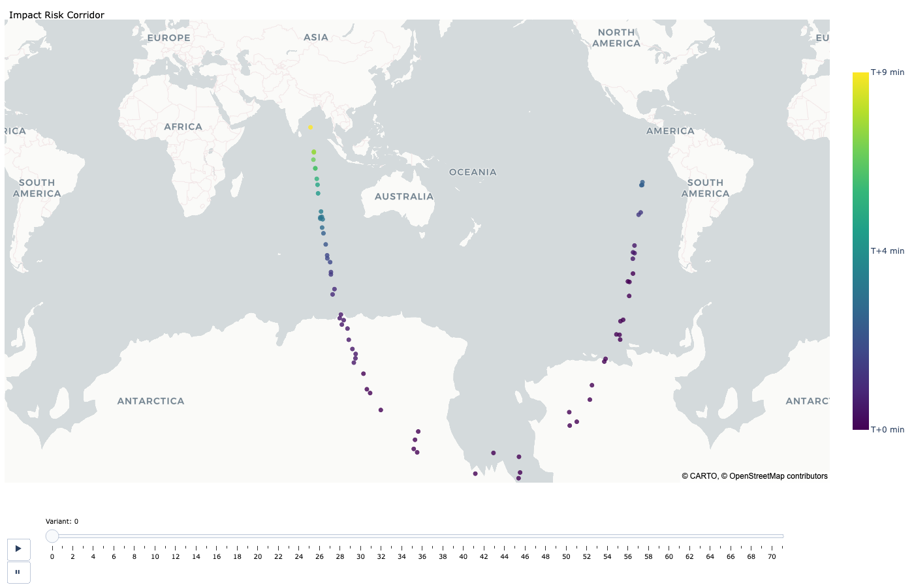

Impact Risk Analysis¶
Goal¶
Estimate impact likelihood from uncertain orbits, then inspect event timing, collision-condition behavior, and impact geography for operational decision-making.
When to Use This Guide¶
Probabilistic impact-risk assessment from uncertain orbit solutions.
Fast triage followed by higher-fidelity reruns for decision support.
Scenario studies with custom collision conditions and stopping logic.
Backend Requirement¶
Impact analysis requires a propagator that implements ImpactMixin collision
detection. For production use, prefer adam_assist.ASSISTPropagator.
Core Pattern¶
sample variants from orbit covariance
propagate variants while monitoring collision conditions
aggregate collision outcomes into cumulative probabilities
Core Objects and Their Roles¶
CollisionConditions: defines monitored event surfaces and termination behavior.CollisionEvent: event rows returned by detection (what was hit, when, and whether that condition is terminal).ImpactProbabilities: per-orbit, per-condition summary table with counts, probabilities, and timing statistics.
Collision Conditions: What They Are¶
Each row in CollisionConditions is one monitored boundary:
condition_id: label used in outputs and summaries.collision_object: body code (for exampleEARTH,MOON).collision_distance: radial threshold in km from the body center.stopping_condition: whether propagation should stop for a variant after this condition is met.
Minimal explicit setup:
from adam_core.coordinates import Origin
from adam_core.dynamics.impacts import CollisionConditions
conditions: CollisionConditions = CollisionConditions.from_kwargs(
condition_id=["Earth", "Moon"],
collision_object=Origin.from_kwargs(code=["EARTH", "MOON"]),
collision_distance=[6420.0, 1740.0],
stopping_condition=[True, True],
)
Stopping Conditions: How To Use Them¶
stopping_condition is per-condition and controls termination behavior after
that boundary is crossed:
True: treat this condition as terminal for a variant.False: keep propagating after crossing this boundary so later events can still be recorded.mixed configurations: common for “terminal Earth impact, non-terminal Moon/other event tracking.”
Example mixed configuration:
conditions: CollisionConditions = CollisionConditions.from_kwargs(
condition_id=["Earth", "Moon"],
collision_object=Origin.from_kwargs(code=["EARTH", "MOON"]),
collision_distance=[6420.0, 1740.0],
stopping_condition=[True, False],
)
Quick Triage Example¶
Use this for a first-pass estimate before a larger rerun.
from adam_assist import ASSISTPropagator
from adam_core.dynamics.impacts import (
CollisionEvent,
ImpactProbabilities,
calculate_impact_probabilities,
calculate_impacts,
)
from adam_core.orbits import Orbits, VariantOrbits
from adam_core.orbits.query import query_sbdb
orbit: Orbits = query_sbdb(["2024 YR4"])
propagator = ASSISTPropagator()
variants: VariantOrbits
collisions: CollisionEvent
variants, collisions = calculate_impacts(
orbits=orbit,
num_days=365,
propagator=propagator,
num_samples=5000,
processes=16,
seed=42,
)
impact_probabilities: ImpactProbabilities = calculate_impact_probabilities(
variants,
collisions,
)
print(impact_probabilities.to_dataframe())
YR4-Style End-to-End Workflow (Expanded)¶
This is the full operational path with explicit analysis window and explicit collision conditions.
from adam_assist import ASSISTPropagator
from adam_core.coordinates import Origin
from adam_core.dynamics.impacts import (
CollisionConditions,
CollisionEvent,
ImpactProbabilities,
calculate_impact_probabilities,
calculate_impacts,
)
from adam_core.orbits import Orbits, VariantOrbits
from adam_core.orbits.query import query_sbdb
from adam_core.time import Timestamp
orbit: Orbits = query_sbdb(["2024 YR4"])
# Size the propagation window from an operationally relevant date.
approx_impact_date: Timestamp = Timestamp.from_iso8601(["2032-12-22"], scale="tdb")
analysis_end: Timestamp = approx_impact_date.add_days(30)
days_to_run, _ = analysis_end.difference(orbit.coordinates.time)
num_days: int = int(days_to_run[0].as_py())
conditions: CollisionConditions = CollisionConditions.from_kwargs(
condition_id=["Earth", "Moon"],
collision_object=Origin.from_kwargs(code=["EARTH", "MOON"]),
collision_distance=[6420.0, 1740.0],
stopping_condition=[True, True],
)
propagator = ASSISTPropagator()
variants: VariantOrbits
impacts: CollisionEvent
variants, impacts = calculate_impacts(
orbits=orbit,
num_days=num_days,
propagator=propagator,
num_samples=10000,
processes=60,
seed=42,
conditions=conditions,
)
probabilities: ImpactProbabilities = calculate_impact_probabilities(
variants,
impacts,
conditions=conditions,
)
print(probabilities.to_dataframe())
Inspect Event Rows and Probability Outputs¶
Inspect raw events before summarizing so condition behavior is clear.
impact_df = impacts.to_dataframe()
print(impact_df[["orbit_id", "variant_id", "condition_id", "stopping_condition"]].head())
print("event counts by condition:")
print(impact_df["condition_id"].value_counts())
ImpactProbabilities includes per-orbit, per-condition summaries such as:
impactsandvariantscumulative_probabilitymean_impact_time/stddev_impact_timeminimum and maximum impact times
Alternative Usage Patterns¶
Quick Earth-only triage: use default conditions and moderate
num_samplesfor throughput.Decision-grade rerun: increase
num_samplesand tighten/expandnum_daysaround relevant windows.Custom event surfaces: define multiple conditions with distinct
stopping_conditionvalues to encode mission-specific logic.Bring your own variant strategy: generate variants explicitly with
VariantOrbits.create(method=...)and callpropagator.detect_collisions(...)directly.
from adam_core.orbits import Orbits, VariantOrbits
variants_direct: VariantOrbits = VariantOrbits.create(
orbit,
method="sigma-point", # or "monte-carlo"
num_samples=5000,
seed=11,
)
propagated: Orbits
impacts_direct: CollisionEvent
propagated, impacts_direct = propagator.detect_collisions(
variants_direct,
num_days=num_days,
conditions=conditions,
max_processes=16,
)
Visualization Workflow¶
Risk corridor map¶
Use plot_risk_corridor to visualize impact geography over time. Prefer
map_style="carto-positron" for docs/CI/browser stability.
import plotly.graph_objects as go
from adam_core.dynamics.plots import plot_risk_corridor
corridor_fig: go.Figure = plot_risk_corridor(
impacts,
title="Risk Corridor for 2024 YR4",
map_style="carto-positron",
)
corridor_fig.show()
For a deterministic static preview (docs/PR assets), snapshot a late frame before exporting:
if corridor_fig.frames:
corridor_fig.update(data=corridor_fig.frames[-1].data)
corridor_fig.write_image(
"impact_risk_corridor_preview.png",
width=1400,
height=900,
scale=1,
)

Corridor preview with impacts colored by relative impact time.¶
Impact simulation animation¶
Use generate_impact_visualization_data + plot_impact_simulation to
build an Earth/Moon approach and impact sequence.
import plotly.graph_objects as go
from adam_core.dynamics.plots import (
generate_impact_visualization_data,
plot_impact_simulation,
)
from adam_core.orbits import Orbits
from adam_core.time import Timestamp
propagation_times: Timestamp
propagated_best_fit_orbit: Orbits
propagated_variants: dict[str, Orbits]
propagation_times, propagated_best_fit_orbit, propagated_variants = (
generate_impact_visualization_data(
orbit,
variants,
impacts,
propagator,
time_step=5.0,
time_range=60.0,
max_processes=8,
)
)
sim_fig: go.Figure = plot_impact_simulation(
propagation_times,
propagated_best_fit_orbit,
propagated_variants,
impacts,
title="2024 YR4 Impact Simulation",
sample_impactors=None,
sample_non_impactors=0.1,
logo=False,
)
sim_fig.show()
# Shareable artifact for review workflows.
sim_fig.write_html("impact_simulation.html")
Performance and Reproducibility¶
num_samples: larger sample counts increase confidence in low-probability tails.processes/max_processes: primary runtime scaling controls.seed: fix for reproducible Monte Carlo variant generation.practical approach: run a fast triage pass first, then rerun higher-fidelity for final products.